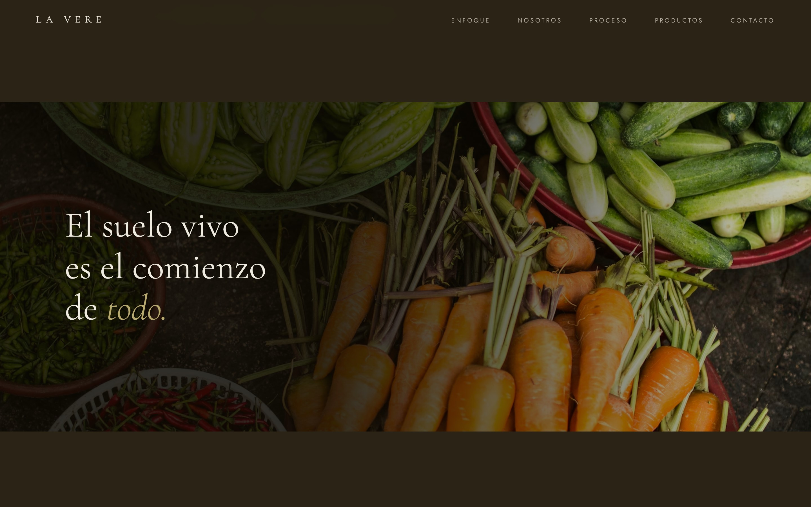

La Vere
Agricultura regenerativa sintropica
El problema
La Vere Sintropica, un proyecto de agricultura regenerativa en Argentina, necesitaba un sitio que comunicara su enfoque sintropico — un sistema que replica ecosistemas forestales — de forma visual y accesible. Debía contar su historia desde 2019 y conectar con personas interesadas en la regeneración del suelo.

La solución
Un sitio web con paleta tierra y tipografía orgánica que refleja la conexión con la naturaleza. Un timeline interactivo recorre la evolución del proyecto de 2019 a 2024, mientras las animaciones parallax dan profundidad a cada sección.
12 secciones que presentan el enfoque sintropico, el equipo, 4 categorías de productos (Frutas, Semillas, Verduras, Visitas), video showcase, y un formulario de contacto integrado. Cursor custom, contadores animados y ticker marquee refuerzan la identidad visual.
Paleta
Tipografía
Cormorant Garamond + Jost
Features
- Timeline interactivo 2019-2024
- Animaciones parallax
- 4 categorías de productos con overlays
- Video showcase
- Contadores animados por scroll
- Ticker marquee animado
- Cursor custom
- Formulario de contacto integrado